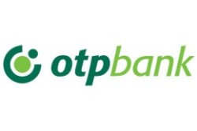

Stratégiai partnereink
SPAR Magyarország!

A SPAR a Magyar Máltai Szeretetszolgálat stratégiai partnere. A közösen szervezett Adni öröm! akcióban 1997 óta minden évben tízezreik adakoznak a kiválasztott üzletekben zajló gyűjtés során, az ajándékcsomagokat pedig rászorulók tízezreinek juttatja el Szeretetszolgálat. A SPAR hosszú időn át jótékonysági termékével támogatta a Máltai Mentőszolgálatot. A kiválasztott üzletek a Szeretetszolgálat adománykártyáit forgalmazzák.
OTP Bank Nyrt.
Az OTP Bank Játszva megelőzni programjának segítségével a Szeretetszolgálat mozgó játszóterei több mint kétszáz lecsúszó kistelepülésre viszik el a játék örömét. A programhoz öt kisbuszt adományozott az OTP Bank.